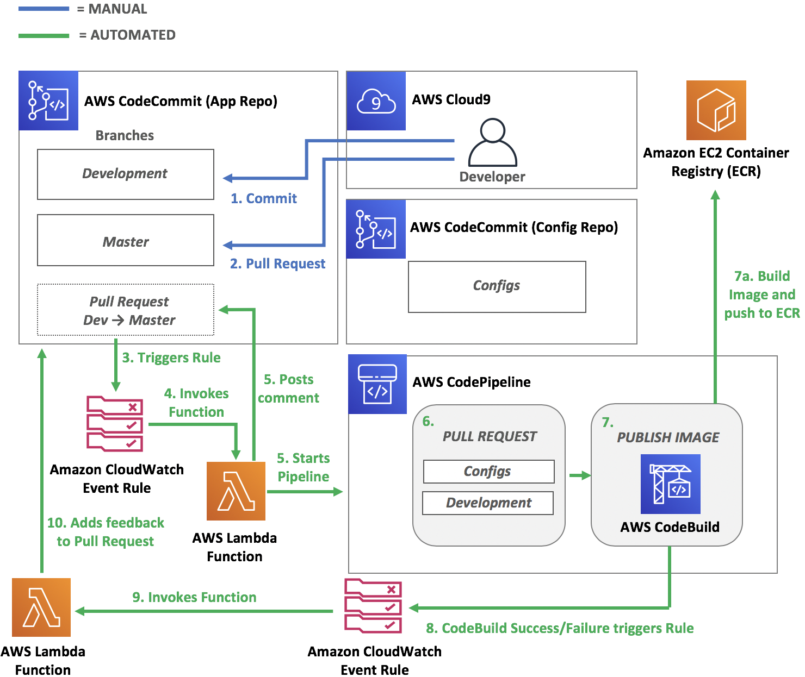

Module 0 Environment Setup
Time: 15 minutes
In the first module you will be configuring the initial pipeline and setting up the Anchore service which you will be integrating into the pipeline later on in this workshop. This module requires you to run two different AWS CloudFormation templates, which will automate the creation of the pipeline and Anchore service. You will then walk through each stage and manually configure the security testing.
Deploy the Environment
The CloudFormation template you run will create the Anchore vulnerability scanning service as well as the initial pipeline.
Before you deploy the CloudFormation template feel free to view it here.
| Region | Deploy |
|---|---|
| US East 2 (Ohio) |  |
-
Click the Deploy to AWS button above. This will automatically take you to the console to run the template.
-
The Specify an Amazon S3 template URL is already selected and the template URL is automatically added. Click Next.
-
On the Specify Details click Next.
-
On the Options click Next (leave everything on this page as the default).
-
Finally, on the Review section acknowledge that the template will create IAM roles and CAPABILITY_AUTO_EXPAND and click Create.
What is CAPABILITY_AUTO_EXPAND?
Some templates contain macros. Macros perform custom processing on templates; this can include simple actions like find-and-replace operations, all the way to extensive transformations of entire templates. Because of this, users typically create a change set from the processed template, so that they can review the changes resulting from the macros before actually creating the stack. If your stack template contains one or more macros, and you choose to create a stack directly from the processed template, without first reviewing the resulting changes in a change set, you must acknowledge this capability.
This will bring you back to the CloudFormation console. You can refresh the page to see the stack starting to create.
Before moving on, make sure the stack is in a CREATE_COMPLETE status. This stack takes ~8 minutes.
Browse to your Cloud9 IDE
You will be doing the majority of the workshop using the AWS Command Line Interface (CLI) within AWS Cloud9, a cloud-based integrated development environment (IDE) that lets you write, run, and debug your code with just a browser.
- Open the AWS Cloud9 console (us-east-2)
- Click Open IDE in the container-devsecops-wksp-ide environment. This will take you to your IDE in a new tab. Always keep this tab open
Go to the CloudFormation console and wait for the stack to complete.
Before moving on, make sure the stack is in a CREATE_COMPLETE status. This stack takes ~3 minutes.
Clone repositories
-
Go back to your Cloud9 IDE
-
Setup your git credentials and clone the repo that contains all the configurations for your pipeline:
git config --global credential.helper '!aws codecommit credential-helper $@' git config --global credential.UseHttpPath true git clone https://git-codecommit.us-east-2.amazonaws.com/v1/repos/container-devsecops-wksp-config configurations git clone https://git-codecommit.us-east-2.amazonaws.com/v1/repos/container-devsecops-wksp-app sample-application
What is aws codecommit credential-helper?
The credential-helper utility is not designed to be called directly from the AWS CLI. Instead it is intended to be used as a parameter with the git config command to set up your local computer. It enables Git to use HTTPS and a cryptographically signed version of your IAM user credentials or Amazon EC2 instance role whenever Git needs to authenticate with AWS to interact with CodeCommit repositories.
Enable AWS Security Hub
You will be using AWS Security Hub to manage your container image vulnerabilities.
- Enable Security Hub
aws securityhub enable-security-hub
Pipeline Architecture
You can browse to AWS CodePipeline to view your current pipeline. All the stages are there but they have not been properly configured. Below is the current architecture of your pipeline.

After you have successfully setup your environment, you can proceed to the next module.